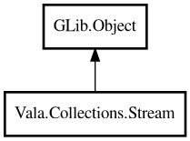

Stream
Object Hierarchy:

Description:
public class Stream<T> : Object
A fluent pipeline for transforming and aggregating collection data.
Stream provides a chainable API for filter, map, sort, distinct, limit/skip, and terminal operations like reduce, count, and findFirst.
Most intermediate operations return a new Stream, except peek which returns the same instance for chaining. Terminal operations produce a
final result.
Example:
var list = new ArrayList<string> (GLib.str_equal);
list.add ("banana");
list.add ("apple");
list.add ("cherry");
var result = Stream.fromList<string> (list)
.filter ((s) => { return s.length > 5; })
.sorted ((a, b) => { return strcmp (a, b); })
.toList ();
// result: ["banana", "cherry"]
Content:
Static methods:
Methods:
- public bool allMatch (owned PredicateFunc<T> fn)
Returns whether all elements match the predicate. Returns true for an
empty stream.
- public bool anyMatch (owned PredicateFunc<T> fn)
Returns whether any element matches the predicate.
- public int count ()
Returns the number of elements in this stream.
- public Stream<T> distinct (EqualFunc<T> equal)
Returns a Stream with duplicate elements removed. Uses the provided
equality function for comparison.
- public Stream<T> dropWhile (owned PredicateFunc<T> fn)
Returns a Stream skipping elements while the predicate is true, then
includes all remaining elements.
- public Stream<T> filter (owned PredicateFunc<T> fn)
Returns a Stream containing only elements that match the predicate.
- public T findFirst ()
Returns the first element, or null if the stream is empty.
- public T findLast ()
Returns the last element, or null if the stream is empty.
- public void forEach (owned ConsumerFunc<T> fn)
Executes an action for each element.
- public Stream<T> limit (int n)
Returns a Stream limited to the first n elements.
- public Stream<U> map<U> (owned MapFunc<T,U> fn)
Returns a Stream with each element transformed by the function.
- public T max (owned ComparatorFunc<T> cmp)
Returns the maximum element using the given comparator, or null if the
stream is empty.
- public T min (owned ComparatorFunc<T> cmp)
Returns the minimum element using the given comparator, or null if the
stream is empty.
- public bool noneMatch (owned PredicateFunc<T> fn)
Returns whether no elements match the predicate. Returns true for an
empty stream.
- public Stream<T> peek (owned ConsumerFunc<T> fn)
Executes an action on each element and returns the same Stream. Useful
for debugging pipeline contents.
- public U reduce<U> (U initial, owned ReduceFunc<T,U> fn)
Folds the stream into a single value by applying the accumulator
function to each element, starting from the initial value.
- public Stream<T> skip (int n)
Returns a Stream with the first n elements skipped.
- public Stream<T> sorted (owned ComparatorFunc<T> cmp)
Returns a Stream sorted using the given comparator.
- public Stream<T> takeWhile (owned PredicateFunc<T> fn)
Returns a Stream of elements taken while the predicate is true. Stops
at the first element that does not match.
- public ArrayList<T> toList ()
Collects the stream elements into an ArrayList.
Inherited Members:
All known members inherited from class GLib.Object
- @get
- @new
- @ref
- @set
- add_toggle_ref
- add_weak_pointer
- bind_property
- connect
- constructed
- disconnect
- dispose
- dup_data
- dup_qdata
- force_floating
- freeze_notify
- get_class
- get_data
- get_property
- get_qdata
- get_type
- getv
- interface_find_property
- interface_install_property
- interface_list_properties
- is_floating
- new_valist
- new_with_properties
- newv
- notify
- notify_property
- ref_count
- ref_sink
- remove_toggle_ref
- remove_weak_pointer
- replace_data
- replace_qdata
- set_data
- set_data_full
- set_property
- set_qdata
- set_qdata_full
- set_valist
- setv
- steal_data
- steal_qdata
- thaw_notify
- unref
- watch_closure
- weak_ref
- weak_unref